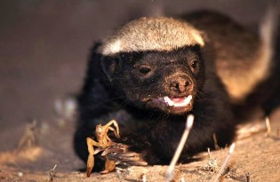
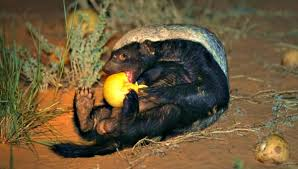

Honey badgers are generalist carnivores with an extremely wide diet. More than sixty species of prey were recorded from the southern Kalahari alone. Badgers eat a host of smaller food items like insect larvae, beetles, scorpions, lizards, rodents and birds. They will catch the larger reptiles like leguaans, crocodiles (1 meter) and pythons (3meters) and include the highly venomous adders, cobras and black mamba in their diet. Larger mammals like the Springhare, polecat and particularly juvenile foxes, jackals, antelope and wild cats, are also caught.
They locate their prey predominantly by their acute sense of smell and catch most of their prey through digging. Honey badgers are accomplished climbers and can easily climb up into the uppermost branches of trees to raid bird nests or bee hives. In the Kalahari they have been seen raiding various raptor nests, including the Pale Chanting Goshawk, which is frequently seen in association with badgers. As their name suggests, badgers have always been associated with honey yet it is the highly nutritious bee brood they eat. While bee brood does not form a necessary part of their diet they will go to great lengths to raid honeybee hives in search of bee brood when it is available (see badgers and bee-keepers) and may cause a lot of damage to apiaries in the process. Badgers will also dig out the larvae belonging to solitary bee species. In the Kalahari badgers were rarely seen drinking water at the available waterholes, and derived most of their water requirements from their food and from the Tsama melon (Citrullus lanatus) during seasons when they were available.
